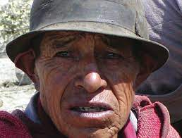
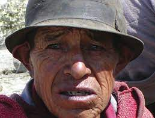

Autoridades indígenas del norte del Cauca denunciaron el secuestro y posterior asesinato de un comunero indígena. La acción la habría cometido el frente 'Jaime Martínez' de las disidencias de las Farc.
Según la Asociación de Cabildos Indígenas del Norte del Cauca (Acín), el pasado 10 de enero, hombres armados secuestraron al comunero Rubén Darío Dagua, de 43 años en el sector La Concha, jurisdicción del municipio de Buenos Aires. De acuerdo con las autoridades ancestrales, Dagua fue conducido en lancha por el río Naya con rumbo desconocido.Ante los hechos, la familia, las autoridades y la guardia indígena, así como autoridades, crearon una comisión de búsqueda que resolvió poner el caso en conocimiento de la mesa de diálogos entre el Gobierno y el Estado Mayor Central de las Farc”, afirmó la organización indígena.
Lamentablemente el 14 de enero la comisión recibe respuesta del asesinato de Dagua y un día después, el frente 'Jaime Martínez' entregó el cuerpo.
La víctima era un reconocido líder del municipio de Jambaló. "Estos hechos demuestran la degradación de las violencias en el norte del Cauca. En medio de prácticas habituales de control por vía del asesinato, los grupos armados arrebatan la vida de las personas y desarmonizan el territorio sin ninguna repercusión", agregaron en la Acin.
"Se espera, frente a los hechos, una respuesta pronta y efectiva a las comunidades por parte del mecanismo de veeduría, monitoreo y verificación para el cese al fuego bilateral recientemente instalado”, expresó por su parte, el coordinador de Derechos Humanos del Instituto de Estudios para el Desarrollo y la Paz (Indepaz), Leonardo González.
"Se espera, frente a los hechos, una respuesta pronta y efectiva a las comunidades por parte del mecanismo de veeduría, monitoreo y verificación para el cese al fuego bilateral recientemente instalado”, expresó por su parte, el coordinador de Derechos Humanos del Instituto de Estudios para el Desarrollo y la Paz (Indepaz), Leonardo González.
 
